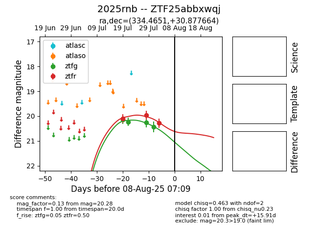

Target 2025rnb at 2025-08-08 09:45, see:
FINK: fink-portal.org/2025rnb
Lasair: lasair-ztf.lsst.ac.uk/objects/2025rnb
ALeRCE: alerce.online/object/2025rnb
TNS: wis-tns.org/object/2025rnb
YSE: ziggy.ucolick.org/yse/transient_detail/2025rnb
alt names
ZTF25abbxwqj (ztf,fink)
2025rnb (tns,yse)
coordinates:
equatorial (ra, dec) = (334.4651,+30.87766)
galactic (l, b) = (88.0099,-21.38627)
photometry
last ztfg=20.43, ztfr=20.28
4 ztfg, 3 ztfr detections
